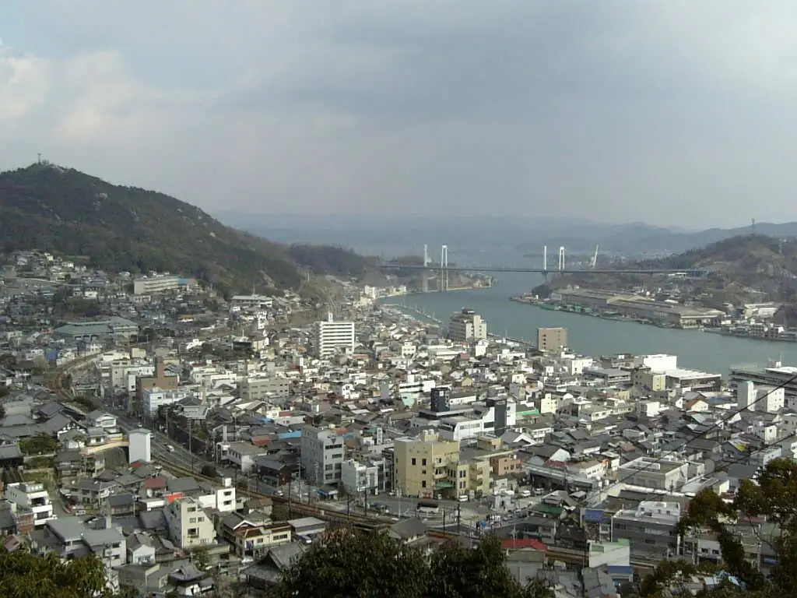
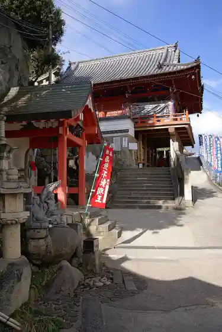
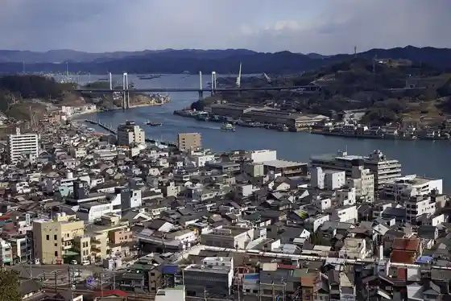
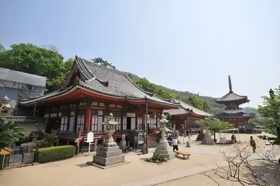
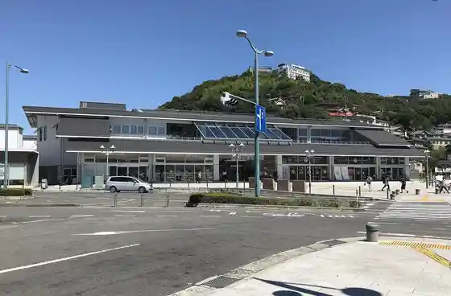

Onomichi
Onomichi · Hiroshima
Onomichi
Highlighted on the Hiroshima map.

Stay
Hotel Arufawan Onomichi
Sakurashimanami Hotel Onomichi Ekimae
Guriinhiru Hotel Onomichi
Onomichi Kokusai Hotel
Onomichi Daiichi Hotel
Onomichi Roiyaru Hotel
Tennen Onsen Onomichi Minato Kan
Onomichi Kurabu
HOTEL CYCLE (Hotel Saikuru)
Oriento Hotel ONOMICHI
HOTEL BEACON ONOMICHI (Hotel Biikon O no Michi)
Hotel
Tennen Onsen Onomichi Fureai Village
Arbor Onomichi
O no Michi Ho Koe
Onomichi Yasuragi no Yado
Dining
The RESTAURANT
Kaisen Shuzo Betcha no I Bukuro
Onomichi WHARF
Lock’y
Akaka Ra Higashi Onomichi Mise
Sushi
Ehime Ya
Hisashi no
HOLLAND VILLAGE CAFÉ ONOMICHI
LOG
Itaria Ryori Korajjio
Kaki Sayu Emon
Uotami Onomichi Minamiguchi Ekimae Mise
Yakiniku Songoku Onomichi Mise
Sennen no Utage Onomichi Minamiguchi Ekimae Mise
Tamaganzo
Onsen
Hotel In no Shima Public Bath
Tennen Onsen Onomichi Minato Kan Public Bath
Onomichi Kurabu Public Bath
Tennen Onsen Onomichi Fureai Village Public Bath
Azumi Setoda Public Bath
Tennen Onsen Ura Yu Ryokan Urashima Public Bath
Sights
Senkoji

Onomichi Suido

Jodo Tera

Onomichi Eki

In Shima Bridge